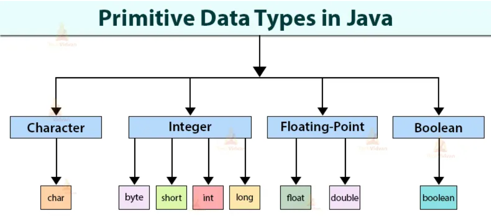
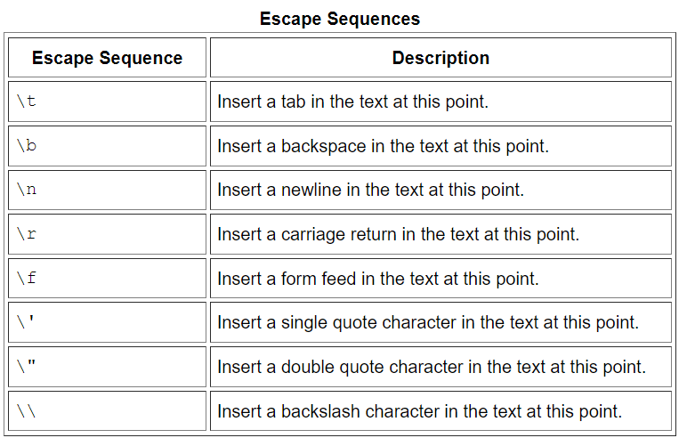

Tipos de datos
Un tipo de datos es un conjunto de valores y un conjunto de operaciones definidas en ellos. Se pueden clasificar en primitivos y objetos. 
Primitivos
Los primitivos son los más básicos y fundamentales, vienen integrados en Java. Especifican el tipo de valor almacenado en una variable y el tamaño de la memoria. Hay 8 tipos primitivos de datos integrados en el lenguaje Java. Estos incluyen: int, byte, short, long, float, double, boolean y char.
| Primitive data type | Wrapper class |
|---|---|
| byte | Byte |
| short | Short |
| int | Integer |
| long | Long |
| float | Float |
| double | Double |
| boolean | Boolean |
| char | Character |
byte
Como su propio nombre denota, emplea un solo byte (8 bits) de almacenamiento. Esto permite almacenar valores en el rango [-128, 127]. Raramente se usa. Ocupa menos memoria y puede ser más rápido accedido.
byte b = 2;
short
Usa el doble de almacenamiento que el anterior, es decir, ocupa 16 bits [-32.768, 32.767].
short s = 3467;
int
Emplea 4 bytes (32 bits) de almacenamiento y es el tipo de dato entero más empleado. Necesita cuatro veces el espacio que ocupa un byte. Es el entero predeterminado usado en Java.
int maxValor = 2147483647;
// after java 7 and higher
int maxValue = 2_147_483_647;
long
Es el tipo entero de mayor tamaño, 8 bytes (64 bits). Para definir un long, tenemos que hacerlo de la siguiente forma:
long myLongNumber = 500L;
float
Tiene una parte flotante que sirve para expresar números decimales. Es de simple precisión (formato y cantidad de espacio que ocupa) porque ocupa 32 bits. No se recomienda mucho su uso.
float f = 4;
float f = 4f; //también válida
double
Es un número de precisión doble y ocupa 64 bits. Es el flotante predeterminado en Java. Se recomienda su uso. Muchas librerías internas de Java, relacionadas con operaciones matemáticas, usan double.
double d = 5;
double d = 5d; //también válida
char
Se utiliza para almacenar caracteres (letras, números, signos, etc.) individuales. Ocupa 2 bytes en memoria (16 bits). Permite almacenar caracteres Unicode. Unicode es un estándar de codificación internacional que nos permite representar diferentes idiomas; y la forma en que funciona es usando una combinación de los dos bytes que un char ocupa en la memoria, que puede representar hasta 65535 diferentes tipos de caracteres. Unicode table.
char c = 'P';
char u = '\u00A2';//print unicode character
Un carácter precedido por una barra invertida () es una secuencia de escape y tiene un significado especial para el compilador. La siguiente tabla muestra las secuencias de escape de Java:

boolean
solo permite almacenar dos posibles valores que son true o false. Tiene la finalidad de facilitar el trabajo con valores "verdadero/falso" (booleanos), resultantes por regla general de evaluar expresiones.
Este tipo de datos representa un bit de información, pero su "tamaño" no es algo que esté definido con precisión.
boolean isMyNamePatri = true;
Wrapper classes (clases contenedores)
Las clases contenedoras proporcionan una forma de utilizar tipos de datos primitivos como objetos. En Java, tenemos una Wrapper class para cada uno de los 8 tipos de datos primitivos. Gracias a esto, podemos realizar operaciones en un dato primitivo como por ejemplo en un int:
int minimoValorInt = Integer.MIN_VALUE;